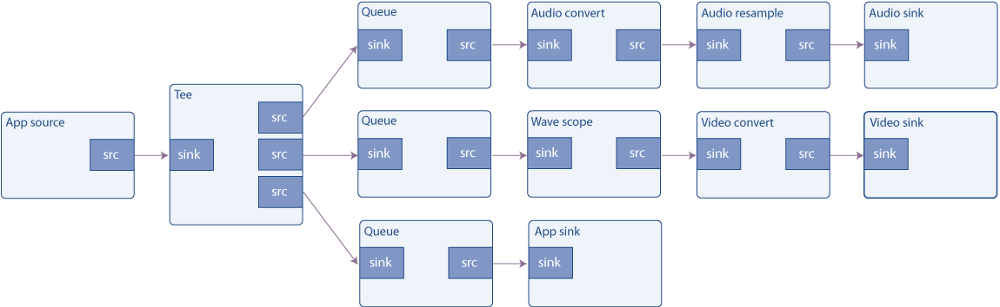

Basic tutorial 8: Short-cutting the pipeline
Goal
Pipelines constructed with GStreamer do not need to be completely closed. Data can be injected into the pipeline and extracted from it at any time, in a variety of ways. This tutorial shows:
-
How to inject external data into a general GStreamer pipeline.
-
How to extract data from a general GStreamer pipeline.
-
How to access and manipulate this data.
Playback tutorial 3: Short-cutting the pipeline explains how to achieve the same goals in a playbin-based pipeline.
Introduction
Applications can interact with the data flowing through a GStreamer pipeline in several ways. This tutorial describes the easiest one, since it uses elements that have been created for this sole purpose.
The element used to inject application data into a GStreamer pipeline is
appsrc, and its counterpart, used to extract GStreamer data back to
the application is appsink. To avoid confusing the names, think of it
from GStreamer's point of view: appsrc is just a regular source, that
provides data magically fallen from the sky (provided by the
application, actually). appsink is a regular sink, where the data
flowing through a GStreamer pipeline goes to die (it is recovered by the
application, actually).
appsrc and appsink are so versatile that they offer their own API
(see their documentation), which can be accessed by linking against the
gstreamer-app library. In this tutorial, however, we will use a
simpler approach and control them through signals.
appsrc can work in a variety of modes: in pull mode, it requests
data from the application every time it needs it. In push mode, the
application pushes data at its own pace. Furthermore, in push mode, the
application can choose to be blocked in the push function when enough
data has already been provided, or it can listen to the
enough-data and need-data signals to control flow. This example
implements the latter approach. Information regarding the other methods
can be found in the appsrc documentation.
Buffers
Data travels through a GStreamer pipeline in chunks called buffers.
Since this example produces and consumes data, we need to know about
GstBuffers.
Source Pads produce buffers, that are consumed by Sink Pads; GStreamer takes these buffers and passes them from element to element.
A buffer simply represents a unit of data, do not assume that all
buffers will have the same size, or represent the same amount of time.
Neither should you assume that if a single buffer enters an element, a
single buffer will come out. Elements are free to do with the received
buffers as they please. GstBuffers may also contain more than one
actual memory buffer. Actual memory buffers are abstracted away using
GstMemory objects, and a GstBuffer can contain multiple GstMemory objects.
Every buffer has attached time-stamps and duration, that describe in which moment the content of the buffer should be decoded, rendered or displayed. Time stamping is a very complex and delicate subject, but this simplified vision should suffice for now.
As an example, a filesrc (a GStreamer element that reads files)
produces buffers with the “ANY” caps and no time-stamping information.
After demuxing (see Basic tutorial 3: Dynamic pipelines)
buffers can have some specific caps, for example “video/x-h264”. After
decoding, each buffer will contain a single video frame with raw caps
(for example, “video/x-raw-yuv”) and very precise time stamps indicating
when should that frame be displayed.
This tutorial
This tutorial expands Basic tutorial 7: Multithreading and Pad Availability in
two ways: firstly, the audiotestsrc is replaced by an appsrc that
will generate the audio data. Secondly, a new branch is added to the
tee so data going into the audio sink and the wave display is also
replicated into an appsink. The appsink uploads the information back
into the application, which then just notifies the user that data has
been received, but it could obviously perform more complex tasks.

A crude waveform generator
Copy this code into a text file named basic-tutorial-8.c (or find it
in the SDK installation).
#include <gst/gst.h>
#include <gst/audio/audio.h>
#include <string.h>
#define CHUNK_SIZE 1024 /* Amount of bytes we are sending in each buffer */
#define SAMPLE_RATE 44100 /* Samples per second we are sending */
/* Structure to contain all our information, so we can pass it to callbacks */
typedef struct _CustomData {
GstElement *pipeline, *app_source, *tee, *audio_queue, *audio_convert1, *audio_resample, *audio_sink;
GstElement *video_queue, *audio_convert2, *visual, *video_convert, *video_sink;
GstElement *app_queue, *app_sink;
guint64 num_samples; /* Number of samples generated so far (for timestamp generation) */
gfloat a, b, c, d; /* For waveform generation */
guint sourceid; /* To control the GSource */
GMainLoop *main_loop; /* GLib's Main Loop */
} CustomData;
/* This method is called by the idle GSource in the mainloop, to feed CHUNK_SIZE bytes into appsrc.
* The ide handler is added to the mainloop when appsrc requests us to start sending data (need-data signal)
* and is removed when appsrc has enough data (enough-data signal).
*/
static gboolean push_data (CustomData *data) {
GstBuffer *buffer;
GstFlowReturn ret;
int i;
GstMapInfo map;
gint16 *raw;
gint num_samples = CHUNK_SIZE / 2; /* Because each sample is 16 bits */
gfloat freq;
/* Create a new empty buffer */
buffer = gst_buffer_new_and_alloc (CHUNK_SIZE);
/* Set its timestamp and duration */
GST_BUFFER_TIMESTAMP (buffer) = gst_util_uint64_scale (data->num_samples, GST_SECOND, SAMPLE_RATE);
GST_BUFFER_DURATION (buffer) = gst_util_uint64_scale (CHUNK_SIZE, GST_SECOND, SAMPLE_RATE);
/* Generate some psychodelic waveforms */
gst_buffer_map (buffer, &map, GST_MAP_WRITE);
raw = (gint16 *)map.data;
data->c += data->d;
data->d -= data->c / 1000;
freq = 1100 + 1000 * data->d;
for (i = 0; i < num_samples; i++) {
data->a += data->b;
data->b -= data->a / freq;
raw[i] = (gint16)(500 * data->a);
}
gst_buffer_unmap (buffer, &map);
data->num_samples += num_samples;
/* Push the buffer into the appsrc */
g_signal_emit_by_name (data->app_source, "push-buffer", buffer, &ret);
/* Free the buffer now that we are done with it */
gst_buffer_unref (buffer);
if (ret != GST_FLOW_OK) {
/* We got some error, stop sending data */
return FALSE;
}
return TRUE;
}
/* This signal callback triggers when appsrc needs data. Here, we add an idle handler
* to the mainloop to start pushing data into the appsrc */
static void start_feed (GstElement *source, guint size, CustomData *data) {
if (data->sourceid == 0) {
g_print ("Start feeding\n");
data->sourceid = g_idle_add ((GSourceFunc) push_data, data);
}
}
/* This callback triggers when appsrc has enough data and we can stop sending.
* We remove the idle handler from the mainloop */
static void stop_feed (GstElement *source, CustomData *data) {
if (data->sourceid != 0) {
g_print ("Stop feeding\n");
g_source_remove (data->sourceid);
data->sourceid = 0;
}
}
/* The appsink has received a buffer */
static void new_sample (GstElement *sink, CustomData *data) {
GstSample *sample;
/* Retrieve the buffer */
g_signal_emit_by_name (sink, "pull-sample", &sample);
if (sample) {
/* The only thing we do in this example is print a * to indicate a received buffer */
g_print ("*");
gst_buffer_unref (sample);
}
}
/* This function is called when an error message is posted on the bus */
static void error_cb (GstBus *bus, GstMessage *msg, CustomData *data) {
GError *err;
gchar *debug_info;
/* Print error details on the screen */
gst_message_parse_error (msg, &err, &debug_info);
g_printerr ("Error received from element %s: %s\n", GST_OBJECT_NAME (msg->src), err->message);
g_printerr ("Debugging information: %s\n", debug_info ? debug_info : "none");
g_clear_error (&err);
g_free (debug_info);
g_main_loop_quit (data->main_loop);
}
int main(int argc, char *argv[]) {
CustomData data;
GstPadTemplate *tee_src_pad_template;
GstPad *tee_audio_pad, *tee_video_pad, *tee_app_pad;
GstPad *queue_audio_pad, *queue_video_pad, *queue_app_pad;
GstAudioInfo info;
GstCaps *audio_caps;
GstBus *bus;
/* Initialize cumstom data structure */
memset (&data, 0, sizeof (data));
data.b = 1; /* For waveform generation */
data.d = 1;
/* Initialize GStreamer */
gst_init (&argc, &argv);
/* Create the elements */
data.app_source = gst_element_factory_make ("appsrc", "audio_source");
data.tee = gst_element_factory_make ("tee", "tee");
data.audio_queue = gst_element_factory_make ("queue", "audio_queue");
data.audio_convert1 = gst_element_factory_make ("audioconvert", "audio_convert1");
data.audio_resample = gst_element_factory_make ("audioresample", "audio_resample");
data.audio_sink = gst_element_factory_make ("autoaudiosink", "audio_sink");
data.video_queue = gst_element_factory_make ("queue", "video_queue");
data.audio_convert2 = gst_element_factory_make ("audioconvert", "audio_convert2");
data.visual = gst_element_factory_make ("wavescope", "visual");
data.video_convert = gst_element_factory_make ("videoconvert", "csp");
data.video_sink = gst_element_factory_make ("autovideosink", "video_sink");
data.app_queue = gst_element_factory_make ("queue", "app_queue");
data.app_sink = gst_element_factory_make ("appsink", "app_sink");
/* Create the empty pipeline */
data.pipeline = gst_pipeline_new ("test-pipeline");
if (!data.pipeline || !data.app_source || !data.tee || !data.audio_queue || !data.audio_convert1 ||
!data.audio_resample || !data.audio_sink || !data.video_queue || !data.audio_convert2 || !data.visual ||
!data.video_convert || !data.video_sink || !data.app_queue || !data.app_sink) {
g_printerr ("Not all elements could be created.\n");
return -1;
}
/* Configure wavescope */
g_object_set (data.visual, "shader", 0, "style", 0, NULL);
/* Configure appsrc */
gst_audio_info_set_format (&info, GST_AUDIO_FORMAT_S16, SAMPLE_RATE, 1, NULL);
audio_caps = gst_audio_info_to_caps (&info);
g_object_set (data.app_source, "caps", audio_caps, "format", GST_FORMAT_TIME, NULL);
g_signal_connect (data.app_source, "need-data", G_CALLBACK (start_feed), &data);
g_signal_connect (data.app_source, "enough-data", G_CALLBACK (stop_feed), &data);
/* Configure appsink */
g_object_set (data.app_sink, "emit-signals", TRUE, "caps", audio_caps, NULL);
g_signal_connect (data.app_sink, "new-sample", G_CALLBACK (new_sample), &data);
gst_caps_unref (audio_caps);
g_free (audio_caps_text);
/* Link all elements that can be automatically linked because they have "Always" pads */
gst_bin_add_many (GST_BIN (data.pipeline), data.app_source, data.tee, data.audio_queue, data.audio_convert1, data.audio_resample,
data.audio_sink, data.video_queue, data.audio_convert2, data.visual, data.video_convert, data.video_sink, data.app_queue,
data.app_sink, NULL);
if (gst_element_link_many (data.app_source, data.tee, NULL) != TRUE ||
gst_element_link_many (data.audio_queue, data.audio_convert1, data.audio_resample, data.audio_sink, NULL) != TRUE ||
gst_element_link_many (data.video_queue, data.audio_convert2, data.visual, data.video_convert, data.video_sink, NULL) != TRUE ||
gst_element_link_many (data.app_queue, data.app_sink, NULL) != TRUE) {
g_printerr ("Elements could not be linked.\n");
gst_object_unref (data.pipeline);
return -1;
}
/* Manually link the Tee, which has "Request" pads */
tee_src_pad_template = gst_element_class_get_pad_template (GST_ELEMENT_GET_CLASS (data.tee), "src_%d");
tee_audio_pad = gst_element_request_pad (data.tee, tee_src_pad_template, NULL, NULL);
g_print ("Obtained request pad %s for audio branch.\n", gst_pad_get_name (tee_audio_pad));
queue_audio_pad = gst_element_get_static_pad (data.audio_queue, "sink");
tee_video_pad = gst_element_request_pad (data.tee, tee_src_pad_template, NULL, NULL);
g_print ("Obtained request pad %s for video branch.\n", gst_pad_get_name (tee_video_pad));
queue_video_pad = gst_element_get_static_pad (data.video_queue, "sink");
tee_app_pad = gst_element_request_pad (data.tee, tee_src_pad_template, NULL, NULL);
g_print ("Obtained request pad %s for app branch.\n", gst_pad_get_name (tee_app_pad));
queue_app_pad = gst_element_get_static_pad (data.app_queue, "sink");
if (gst_pad_link (tee_audio_pad, queue_audio_pad) != GST_PAD_LINK_OK ||
gst_pad_link (tee_video_pad, queue_video_pad) != GST_PAD_LINK_OK ||
gst_pad_link (tee_app_pad, queue_app_pad) != GST_PAD_LINK_OK) {
g_printerr ("Tee could not be linked\n");
gst_object_unref (data.pipeline);
return -1;
}
gst_object_unref (queue_audio_pad);
gst_object_unref (queue_video_pad);
gst_object_unref (queue_app_pad);
/* Instruct the bus to emit signals for each received message, and connect to the interesting signals */
bus = gst_element_get_bus (data.pipeline);
gst_bus_add_signal_watch (bus);
g_signal_connect (G_OBJECT (bus), "message::error", (GCallback)error_cb, &data);
gst_object_unref (bus);
/* Start playing the pipeline */
gst_element_set_state (data.pipeline, GST_STATE_PLAYING);
/* Create a GLib Main Loop and set it to run */
data.main_loop = g_main_loop_new (NULL, FALSE);
g_main_loop_run (data.main_loop);
/* Release the request pads from the Tee, and unref them */
gst_element_release_request_pad (data.tee, tee_audio_pad);
gst_element_release_request_pad (data.tee, tee_video_pad);
gst_element_release_request_pad (data.tee, tee_app_pad);
gst_object_unref (tee_audio_pad);
gst_object_unref (tee_video_pad);
gst_object_unref (tee_app_pad);
/* Free resources */
gst_element_set_state (data.pipeline, GST_STATE_NULL);
gst_object_unref (data.pipeline);
return 0;
}
Need help?
If you need help to compile this code, refer to the Building the tutorials section for your platform: Linux, Mac OS X or Windows, or use this specific command on Linux:
gcc basic-tutorial-8.c -o basic-tutorial-8 `pkg-config --cflags --libs gstreamer-1.0 gst-audio-1.0`If you need help to run this code, refer to the Running the tutorials section for your platform: Linux, Mac OS X or Windows.
This tutorial plays an audible tone for varying frequency through the audio card and opens a window with a waveform representation of the tone. The waveform should be a sinusoid, but due to the refreshing of the window might not appear so.
Required libraries:
gstreamer-1.0
Walkthrough
The code to create the pipeline (Lines 131 to 205) is an enlarged
version of Basic tutorial 7: Multithreading and Pad
Availability.
It involves instantiating all the elements, link the elements with
Always Pads, and manually link the Request Pads of the tee element.
Regarding the configuration of the appsrc and appsink elements:
/* Configure appsrc */
audio_caps_text = g_strdup_printf (AUDIO_CAPS, SAMPLE_RATE);
audio_caps = gst_caps_from_string (audio_caps_text);
g_object_set (data.app_source, "caps", audio_caps, NULL);
g_signal_connect (data.app_source, "need-data", G_CALLBACK (start_feed), &data);
g_signal_connect (data.app_source, "enough-data", G_CALLBACK (stop_feed), &data);
The first property that needs to be set on the appsrc is caps. It
specifies the kind of data that the element is going to produce, so
GStreamer can check if linking with downstream elements is possible
(this is, if the downstream elements will understand this kind of data).
This property must be a GstCaps object, which is easily built from a
string with gst_caps_from_string().
We then connect to the need-data and enough-data signals. These are
fired by appsrc when its internal queue of data is running low or
almost full, respectively. We will use these signals to start and stop
(respectively) our signal generation process.
/* Configure appsink */
g_object_set (data.app_sink, "emit-signals", TRUE, "caps", audio_caps, NULL);
g_signal_connect (data.app_sink, "new-sample", G_CALLBACK (new_sample), &data);
gst_caps_unref (audio_caps);
g_free (audio_caps_text);
Regarding the appsink configuration, we connect to the
new-sample signal, which is emitted every time the sink receives a
buffer. Also, the signal emission needs to be enabled through the
emit-signals property, because, by default, it is disabled.
Starting the pipeline, waiting for messages and final cleanup is done as usual. Let's review the callbacks we have just registered:
/* This signal callback triggers when appsrc needs data. Here, we add an idle handler
* to the mainloop to start pushing data into the appsrc */
static void start_feed (GstElement *source, guint size, CustomData *data) {
if (data->sourceid == 0) {
g_print ("Start feeding\n");
data->sourceid = g_idle_add ((GSourceFunc) push_data, data);
}
}
This function is called when the internal queue of appsrc is about to
starve (run out of data). The only thing we do here is register a GLib
idle function with g_idle_add() that feeds data to appsrc until it
is full again. A GLib idle function is a method that GLib will call from
its main loop whenever it is “idle”, this is, when it has no
higher-priority tasks to perform. It requires a GLib GMainLoop to be
instantiated and running, obviously.
This is only one of the multiple approaches that appsrc allows. In
particular, buffers do not need to be fed into appsrc from the main
thread using GLib, and you do not need to use the need-data and
enough-data signals to synchronize with appsrc (although this is
allegedly the most convenient).
We take note of the sourceid that g_idle_add() returns, so we can
disable it
later.
/* This callback triggers when appsrc has enough data and we can stop sending.
* We remove the idle handler from the mainloop */
static void stop_feed (GstElement *source, CustomData *data) {
if (data->sourceid != 0) {
g_print ("Stop feeding\n");
g_source_remove (data->sourceid);
data->sourceid = 0;
}
}
This function is called when the internal queue of appsrc is full
enough so we stop pushing data. Here we simply remove the idle function
by using g_source_remove() (The idle function is implemented as a
GSource).
/* This method is called by the idle GSource in the mainloop, to feed CHUNK_SIZE bytes into appsrc.
* The ide handler is added to the mainloop when appsrc requests us to start sending data (need-data signal)
* and is removed when appsrc has enough data (enough-data signal).
*/
static gboolean push_data (CustomData *data) {
GstBuffer *buffer;
GstFlowReturn ret;
int i;
gint16 *raw;
gint num_samples = CHUNK_SIZE / 2; /* Because each sample is 16 bits */
gfloat freq;
/* Create a new empty buffer */
buffer = gst_buffer_new_and_alloc (CHUNK_SIZE);
/* Set its timestamp and duration */
GST_BUFFER_TIMESTAMP (buffer) = gst_util_uint64_scale (data->num_samples, GST_SECOND, SAMPLE_RATE);
GST_BUFFER_DURATION (buffer) = gst_util_uint64_scale (CHUNK_SIZE, GST_SECOND, SAMPLE_RATE);
/* Generate some psychodelic waveforms */
raw = (gint16 *)GST_BUFFER_DATA (buffer);
This is the function that feeds appsrc. It will be called by GLib at
times and rates which are out of our control, but we know that we will
disable it when its job is done (when the queue in appsrc is full).
Its first task is to create a new buffer with a given size (in this
example, it is arbitrarily set to 1024 bytes) with
gst_buffer_new_and_alloc().
We count the number of samples that we have generated so far with the
CustomData.num_samples variable, so we can time-stamp this buffer
using the GST_BUFFER_TIMESTAMP macro in GstBuffer.
Since we are producing buffers of the same size, their duration is the
same and is set using the GST_BUFFER_DURATION in GstBuffer.
gst_util_uint64_scale() is a utility function that scales (multiply
and divide) numbers which can be large, without fear of overflows.
The bytes that for the buffer can be accessed with GST_BUFFER_DATA in
GstBuffer (Be careful not to write past the end of the buffer: you
allocated it, so you know its size).
We will skip over the waveform generation, since it is outside the scope of this tutorial (it is simply a funny way of generating a pretty psychedelic wave).
/* Push the buffer into the appsrc */
g_signal_emit_by_name (data->app_source, "push-buffer", buffer, &ret);
/* Free the buffer now that we are done with it */
gst_buffer_unref (buffer);
Once we have the buffer ready, we pass it to appsrc with the
push-buffer action signal (see information box at the end of Playback tutorial 1: Playbin usage), and then
gst_buffer_unref() it since we no longer need it.
/* The appsink has received a buffer */
static void new_sample (GstElement *sink, CustomData *data) {
GstSample *sample;
/* Retrieve the buffer */
g_signal_emit_by_name (sink, "pull-sample", &sample);
if (sample) {
/* The only thing we do in this example is print a * to indicate a received buffer */
g_print ("*");
gst_sample_unref (sample);
}
}
Finally, this is the function that gets called when the
appsink receives a buffer. We use the pull-sample action signal to
retrieve the buffer and then just print some indicator on the screen. We
can retrieve the data pointer using the GST_BUFFER_DATA macro and the
data size using the GST_BUFFER_SIZE macro in GstBuffer. Remember
that this buffer does not have to match the buffer that we produced in
the push_data function, any element in the path could have altered the
buffers in any way (Not in this example: there is only a tee in the
path between appsrc and appsink, and it does not change the content
of the buffers).
We then gst_buffer_unref() the buffer, and this tutorial is done.
Conclusion
This tutorial has shown how applications can:
- Inject data into a pipeline using the
appsrcelement. - Retrieve data from a pipeline using the
appsinkelement. - Manipulate this data by accessing the
GstBuffer.
In a playbin-based pipeline, the same goals are achieved in a slightly different way. Playback tutorial 3: Short-cutting the pipeline shows how to do it.
It has been a pleasure having you here, and see you soon!
The results of the search are